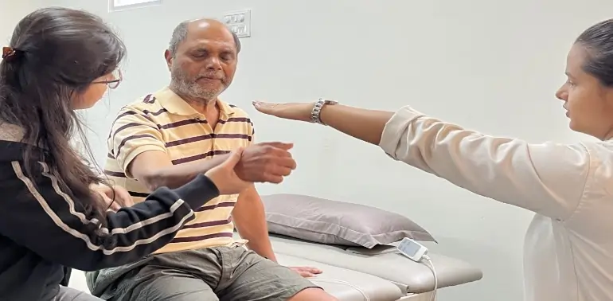

Hospital-Quality ICU Care at Home in Pune


Advanced Medical Supervision in the Comfort of Your Home
A prolonged stay in a hospital's Intensive Care Unit (ICU) can be an incredibly stressful and emotionally draining experience for both patients and their families. While essential for acute medical crises, the centeral environment of a hospital is not always the best place for long-term healing and recovery.
At Apricot Rehab in Pune , our ICU at Homeservice is designed to replicate the monitoring and medical support of a hospital ICU within the familiar, healing environment of your own home. Led by our senior medical professionals and executed by a team of highly trained critical care nurses, we provide the highest standard of care for medically stable patients who still require intensive, 24/7 support.
Key Components of Our ICU at Home Service
Our program is a complete, end-to-end solution for providing critical care at home.
- 24/7
Critical Care Nursing:
Round-the-clock care and monitoring by ICU-trained nurses. - Advanced Medical Equipment Setup:
Including ventilators, cardiac monitors, and oxygen support. - On-Call & Visiting Doctor Supervision:
Regular assessments and emergency support from our medical team. - Integrated Respiratory & Physiotherapy:
In-home therapy to support recovery. - Medication & IV Fluid Management:
Professional administration of all prescribed treatments. - Strict Infection Control Protocols:
To minimize the risk of complications. - Lab
Sample Collection & Diagnostics:
Coordination of necessary tests at home. - Seamless Coordination with Your Primary
Doctor:
Keeping your specialist informed at every step.
When is ICU at Home the Right Choice?
Our ICU at Home service is the ideal solution for patients who are medically stable but require a level of care that cannot be managed by family or a standard nurse. This includes:
- Long-Term Ventilator Support: For patients who are dependent on mechanical ventilation to breathe.
- Post-Discharge Critical Care: For patients discharged from the hospital after major surgery, stroke, or trauma who still require intensive monitoring.
- Advanced Neurological Conditions: For individuals with conditions like late-stage ALS/MND or high-level spinal cord injuries who have complex respiratory needs.
- Tracheostomy & Feeding Tube Management: For patients who require expert, 24/7 management of these devices.
One of the most powerful reasons to choose home-based care is safety. Hospital-Acquired Infections (HAIs) are a serious risk, with studies indicating they are a significant cause of complications in prolonged hospital stays. Our service provides one-on-one nursing in a controlled home environment, dramatically reducing this risk.
Enquire About Setting Up an ICU at HomeOur Comprehensive ICU at Home Setup
We bring the entire infrastructure and expertise of an ICU to you.
The Critical Care Team
- Critical Care Nurses: You will have ICU-trained nurses working in 12-hour shifts to provide continuous, one-on-one monitoring and expert care.
- Supervising Doctors: Our on-duty doctors provide regular home visits for assessment and are available 24/7 for on-call support and emergency management.
- Specialist Physiotherapists:Our Respiratory Physiotherapists are Physiotherapists provide essential in-home sessions to aid in recovery and weaning.
Advanced Medical Equipment
We provide and manage all necessary, hospital-grade equipment, including:
- Invasive and Non-Invasive Ventilators
- Multi-Parameter Cardiac Monitor (for ECG, blood pressure, etc.)
- Oxygen Cylinders and Concentrators
- Suction Machines
- Infusion and Syringe Pumps for medication
- Hospital-style bed and pressure-relief mattress (to prevent bedsores)
centeral Protocols & Emergency Response
Our care is governed by strict centeral protocols. We have a clear and rehearsed emergency response plan in place, ensuring that in the event of any deterioration, our team can provide immediate life support and coordinate a swift and safe transfer to a partner hospital if required.

our service
Our Comprehensive Care and Support Services
.webp)
.webp)
-(1).webp)
24/7 Nursing and Medical Supervision
At Apricot Care Assisted Living and Rehabilitation, we provide 24/7 nursing support to ensure that you receive continuous care and medical monitoring. Whether you're staying in our facility or recovering at home, our trained nurses and medical staff are always available to address your needs, ensuring a safe and secure environment throughout your recovery journey.
.webp)
.webp)
.webp)
.webp)
.webp)
.webp)
.webp)
.webp)
.webp)
.webp)
.webp)
.webp)
Why Choose Apricot Rehab for ICU at Home in Pune?
A Medically-Led, Doctor-Supervised Program:
Our service is not just a nursing agency; it is a centeral program overseen by our senior doctors, ensuring the highest standards of medical care.
Seamlessly Integrated with Rehabilitation:
Our ICU at Home service is a core part of our continuum of care. We can seamlessly integrate physiotherapy, occupational therapy, and speech therapy into the daily plan.
Unmatched Nurse Training & Verification:
Our critical care nurses are not only highly qualified but also undergo specific training in our protocols and are rigorously background-verified.
Reduced Risk of Infection:
Providing one-on-one care in your own home is the most effective way to protect a vulnerable patient from dangerous hospital-acquired infections.
Greater Family Involvement & Peace of Mind:
Our service allows the family to be closely involved in the loved one's care in a comfortable and less stressful environment, providing immense emotional benefits and peace of mind.